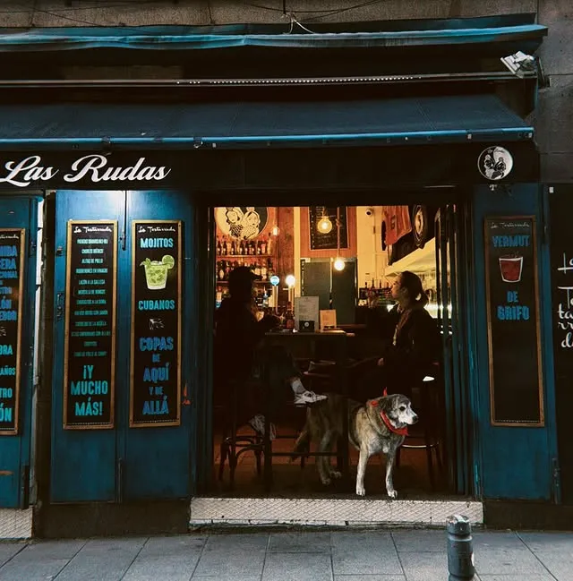
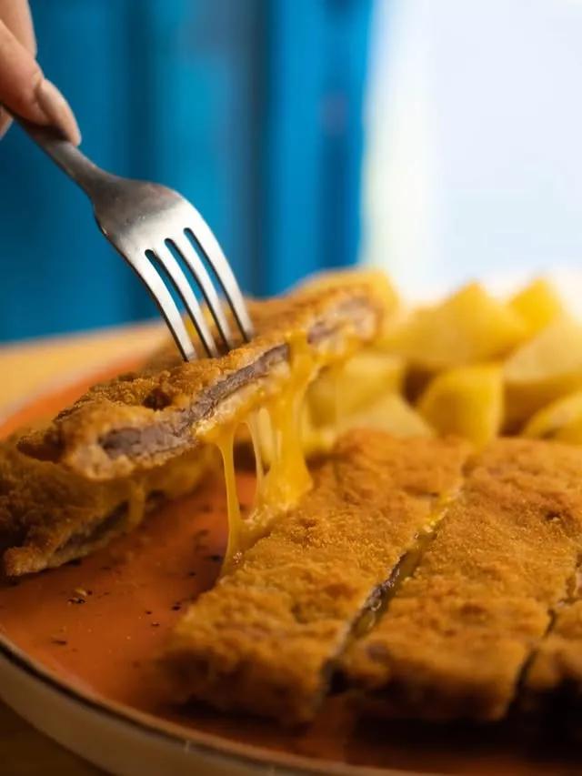
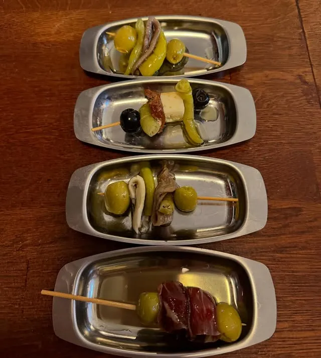
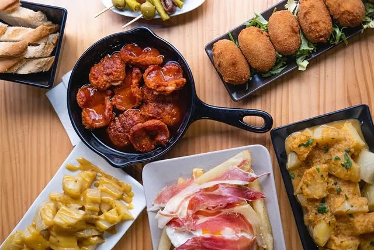
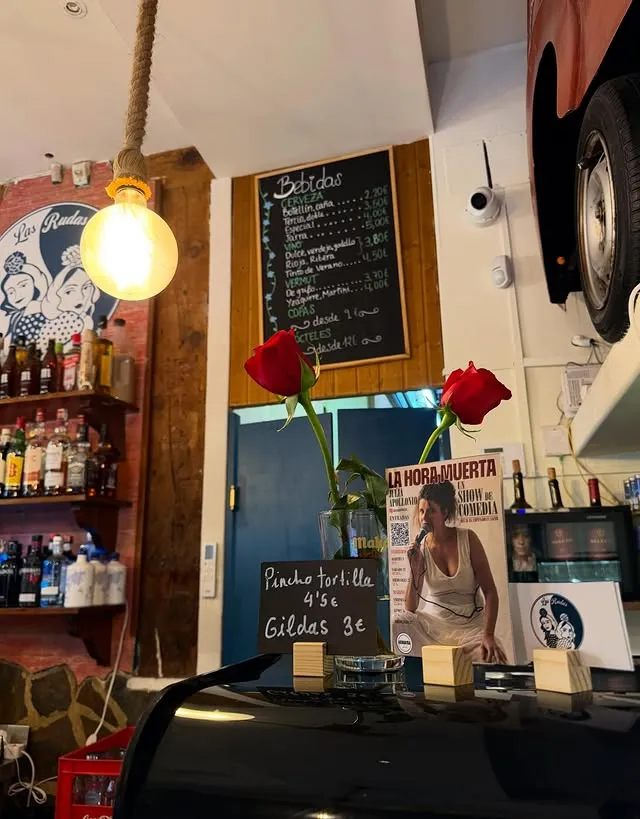
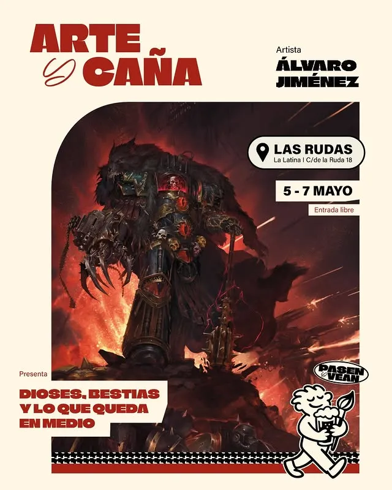
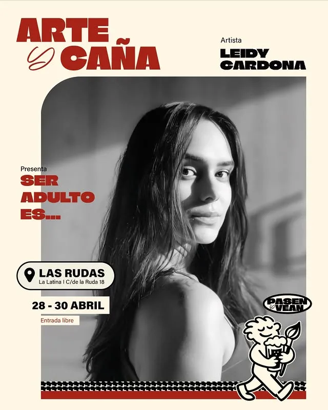
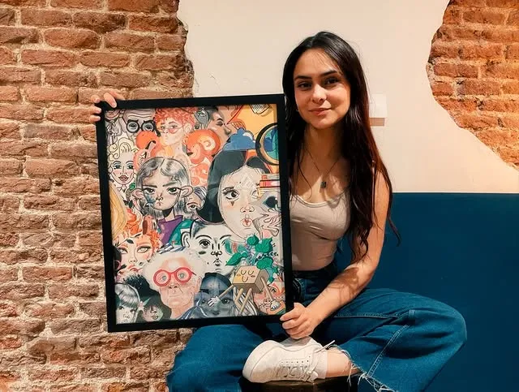
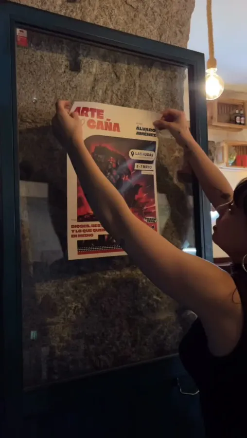
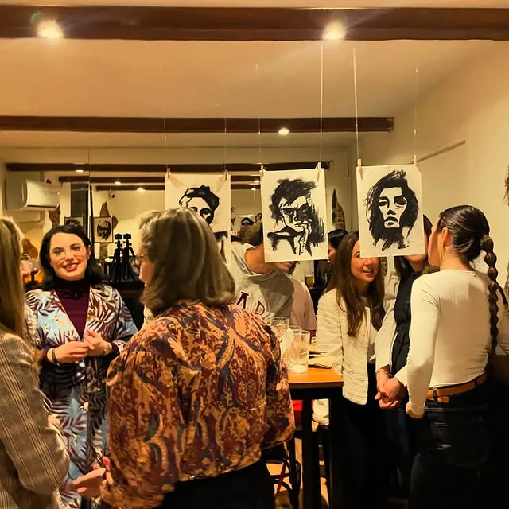

Sabor casero,
sin postureo.
Gildas, pincho de tortilla, bravas y cócteles bien hechos. Comida tradicional con mucho mucho amor. Desliza →
Desliza para verUna caña, comida de la de casa, y arte en las paredes. La taberna de barrio que cada semana cambia de exposición. Pásate.


En la Calle Ruda, en pleno corazón de La Latina, montamos un sitio que no sabíamos muy bien qué era: ni solo bar, ni solo galería. Una barra con Gildas y cañas, las paredes llenas de arte que cambia cada semana, y un puñado de gente que viene a comer, a mirar cuadros, a reírse en una comedia o a hablar de lo que haga falta. Somos Las Rudas 🍀. Aquí cabe todo el mundo.
Gildas, pincho de tortilla, bravas y cócteles bien hechos. Comida tradicional con mucho mucho amor. Desliza →
Desliza para ver


Cada pocos días, un artista toma Las Rudas y cuelga su obra. Tú te tomas una caña rodeado de arte de verdad, y a veces te lo llevas a casa.




Entre semana hay arte, hay charla y hay risas. Mira lo que se monta en Las Rudas.
Nuestras exposiciones. Un artista, su obra en las paredes y una inauguración abierta a todo el barrio.
Cada semanaSábados y domingos al mediodía: vermut, tapeo y la gente del barrio. El plan perfecto antes de comer.
Sáb y DomMicros abiertos, comedia, música y cualquier excusa para llenar la sala. «Viernes con V de vente pa Las Rudas».
ViernesLadrillo visto, terciopelo azul, plantas, amapolas en la barra y arte en cada pared. Un sitio de esos en los que entras a una y te quedas a cuatro. (Y sí, a veces hay un gato en la puerta.)
